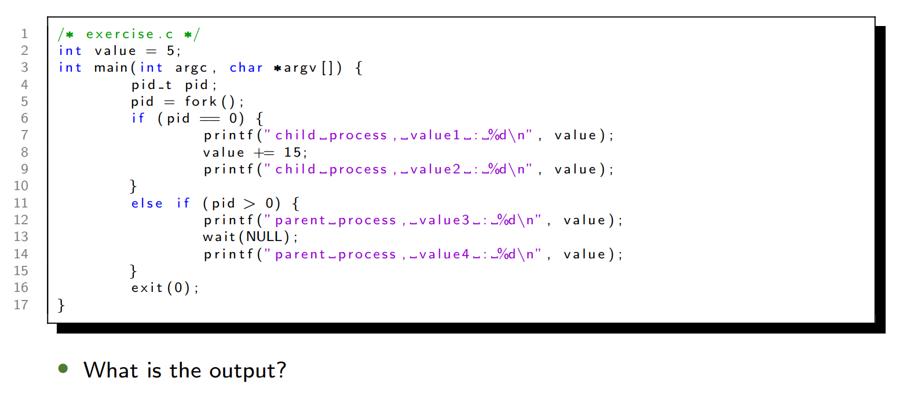

目录 / Contents
- Warm-up 热身练习
- Process Concept 进程概念
- Process Scheduling 进程调度
- Operations on Processes 进程操作
- Interprocess Communication 进程间通信
- Client-Server Communication 客户端-服务器通信
1. Warm-up
CPU虚拟化示例 / CPU Virtualization Example
-
代码分析 / Code Analysis
1
2
3
4
5
6
7/* cpu.c */
int main(int argc, char *argv[]) {
while (1) {
spin(1); // 模拟CPU占用 / Simulate CPU usage
printf("%s\n", argv[1]); // 打印传入参数 / Print input argument
}
} -
执行结果 / Execution Results
- 单进程运行 / Single Process: 连续输出
A - 多进程并发运行 / Multiple Processes (
A & B & C & D): 输出顺序随机（如A, B, D, C...），体现CPU时间片轮转 / Output order is random, demonstrating CPU time-sharing.
- 单进程运行 / Single Process: 连续输出
关键问题 / Key Questions
- 如何实现CPU虚拟化？ / How to virtualize the CPU?
- 机制 / Mechanism: 上下文切换（保存/恢复进程状态） / Context switch (save/restore process state).
- 策略 / Policy: 调度算法（决定下一个运行的进程） / Scheduling algorithm (decides the next process to run).
Process Concept
进程 vs. 程序 / Process vs. Program
- 程序 / Program: 被动的磁盘实体（可执行文件） / Passive entity on disk (executable file).
- 进程 / Process: 活动的内存实体（程序加载后） / Active entity in memory (loaded program).
- 一个程序可对应多个进程（如多用户运行同一程序） / One program can be multiple processes (e.g., multiple users running the same program).
- 进程包括当前活动：Current activity including program counter, processor registers
进程内存布局 / Process Memory Layout
不是进程组成成分
| Section: | Description: |
|---|---|
| Text 文本段 | 程序代码 / Program code |
| Data 数据段 | 全局变量 / Global variables |
| Heap 堆段 | 动态分配的内存 / Dynamically allocated memory |
| Stack 栈段 | 局部变量、函数参数 / Local variables, function parameters |
进程状态 / Process States
- New 新建: 创建中 / Being created.
- Ready 就绪: 等待分配CPU / Waiting to be assigned to CPU.
- Running 运行: 执行中 / Executing.
- Waiting 等待: 等待事件（如I/O） / Waiting for an event (e.g., I/O).
- Terminated 种植: 已结束 / Finished.
- 此外还有Zombee 僵尸进程等

进程控制块（PCB） / Process Control Block (PCB)
- 存储进程状态的核心数据结构 / Core data structure storing process state.
- xv6 PCB示例 / Example (xv6):
1
2
3
4
5
6struct proc {
int pid; // 进程ID / Process ID
enum proc_state state; // 状态 / State
struct context context; // 寄存器上下文 / Register context
// ...其他字段 / Other fields
};
Process Execution : Protection
- How can the OS make sure the program doesn’t do anything that we don’t want it to do?
- Protection via dual mode and system call.
Process Execution : Time Sharing
- How does the operating system stop it from running and switch to another
process? - Time sharing via context switch.
Context Switch 上下文切换: Saving and Restoring context
切换CPU核到另一个进程需要保存当前进程到状态并恢复另一个进程的状态
保存在PCB中

Process Scheduling
调度队列 / Scheduling Queues
- Job Queue: 所有进程 / All processes
- Ready Queue: 就绪进程 / Processes in ready state
- Device Queue: 等待I/O的进程 / Processes in waiting state
- Processes migrate among the various queues
调度器类型 / Scheduler Types
| Scheduler Type | Description | 中文解释 |
|---|---|---|
| Long-term scheduler (Job scheduler) | Controls the number of processes in memory (degree of multiprogramming). Selects which jobs from the job pool are loaded into the ready queue. Runs infrequently (seconds/minutes). | 长期调度器（作业调度器）：控制内存中的进程数量（多道程序度），决定哪些作业从作业池调入就绪队列。运行频率较低（秒/分钟级）。 |
| Short-term scheduler (CPU scheduler) | Selects the next process from the ready queue to execute on the CPU. Runs very frequently (milliseconds). | 短期调度器（CPU调度器）：从就绪队列中选择下一个要执行的进程，分配CPU。运行频率极高（毫秒级）。 |
| Medium-term scheduler | Handles swapping (moving processes between memory and disk). Temporarily removes inactive or blocked processes to free memory (suspend/resume). Balances load between long and short-term scheduling. | 中期调度器：负责交换（内存与磁盘间的进程移动），挂起不活跃或阻塞的进程以释放内存，平衡长/短期调度器的负载。 |
注意：Long-term scheduler 本身并不把进程放入Ready Queue
| 调度器/Scheduler | 描述 / Description | 调用频率 / Frequency |
|---|---|---|
| Long-term scheduler (job scheduler) | 控制多道程序度 / Controls degree of multiprogramming | 低（分钟级） / Low (minutes) |
| Short-term scheduler (CPU scheduler) | 选择下一个执行的进程 / selects which process should be executed next and allocates CPU | 高（毫秒级） / High (ms) |
| Medium-term scheduler | 交换（Swapping） / Swapping | 中 / Medium |
进程类型 / Process Types
- I/O-bound process: spends more time doing I/O than computations, many short CPU bursts
- CPU-bound process: spends more time doing computations; few very long CPU bursts
Operations on Processes
进程创建 / Process Creation
-
Parent process creates children processes, which, in turn create other processes, forming a tree of processes
-
Generally, process identified and managed via a process identifier (pid)
-
Resource sharing options
- Parent and children share all resources
- Children share subset of parent’s resources
- Parent and child share no resources
-
Execution options
- Parent and children execute concurrently
- Parent waits until children terminate
-
Address space
- Child duplicate of parent
- Child has a program loaded into it
-
fork(): 创建子进程（复制父进程） / Creates child process. -
exec(): 替换进程内存空间 / Replaces process memory space.
-
示例 / Example:
1
2
3
4
5
6pid_t pid = fork();
if (pid == 0) {
execlp("/bin/ls", "ls", NULL); // 子进程执行ls / Child runs ls
} else {
wait(NULL); // 父进程等待 / Parent waits
}
进程终止 / Process Termination
-
Process executes the last statement and then asks the operating system to delete it using the
exit()system call.- Returns status data from child to parent (via
wait()) - Process’ resources are deallocated by operating system
- Returns status data from child to parent (via
-
Parent may terminate the execution of children processes using the abort() system call. Some reasons for doing so:
- Child has exceeded allocated resources
- Task assigned to child is no longer required
- The parent is exiting and the operating systems does not allow a child to continue if its parent terminates
-
进程终止的类型
-
正常终止 / Normal:
exit()返回状态给父进程 / Returns status to parent. -
异常终止 / Abnormal:
abort()由父进程终止子进程 / Parent terminates child. -
僵尸进程 / Zombie: 子进程终止但父进程未调用
wait()/ Child terminated but parent did not callwait(). -
孤儿进程 / Orphan: 父进程终止后未调用
wait()，子进程由init接管 / Child adopted by init after parent terminates without invokingwait().
-
课堂练习

Answer
Interprocess Communication (IPC)
共享内存 vs. 消息传递 / Shared Memory vs. Message Passing
- In the message-passing model, communication takes place by means of messages exchanged between the cooperating processes.
- In the shared-memory model, a region of memory that is shared by cooperating processes is established. Processes can then exchange information by reading and writing data to the shared region.
| 共享内存 / Shared Memory | 消息传递 / Message Passing |
|---|---|
| 高速（直接访问内存） / Fast (direct access) | 适用于分布式系统 / Works in distributed systems |
| 需同步机制 / Requires synchronization | 内核介入较慢 / Slower (kernel involved) |
生产者-消费者问题 / Producer-Consumer Problem
-
共享内存方案 / Shared Memory Solution:
1
2
3
4
5
6/* Solution is correct, but can only use BUFFER_SIZE - 1 elements */
typedef struct {...} item;
item buffer[BUFFER_SIZE];
int in = 0;
int out = 0;1
2
3
4
5
6
7/* producer */
item next_produced;
while (true) {
while (((in + 1) % BUFFER_SIZE) == out);
buffer[in] = next_produced;
in = (in + 1) % BUFFER_SIZE;
}1
2
3
4
5
6
7/* consumer */
item next_consumed;
while (true) {
while (in == out);
next_consumed = buffer[out];
out = (out + 1) % BUFFER_SIZE;
}
Message Passing
-
IPC facility provides two operations:
send(message)receive(message)
-
Naming
-
直接通信 / Direct: 进程显式命名对方 / Explicit naming
-
Symmetric addressing: both the sender process and the receiver process must name the other to communicate.
send(P, message): Send a message to process Preceive(Q, message): Receive a message from process Q
-
Asymmetric addressing: only the sender names the recipient; the recipient is not required to name the sender.
send(P, message): Send a message to process Preceive(id, message): Receive a message from any process
-
-
间接通信 / Indirect: 通过邮箱或端口 / Via mailboxes
- A mailbox can be viewed abstractly as an object into which messages can be placed by processes and from which messages can be removed.
send(A, message): Send a message to mailbox Areceive(A, message): Receive a message from mailbox A
- A mailbox can be viewed abstractly as an object into which messages can be placed by processes and from which messages can be removed.
-
-
Synchronization
-
Message passing may be either blocking or non-blocking
-
阻塞发送/接收 / Blocking: 发送方或接收方等待 / Sender/receiver waits.
- Blocking send: the sender is blocked until the message is received
- Blocking receive: the receiver is blocked until a message is available
-
非阻塞 / Non-blocking: 立即返回 / Returns immediately.
- Non-blocking send: the sender sends the message and continue
- Non-blocking receive: the receiver receives: A valid message, or Null message
-
生产者-消费者问题 / Producer-Consumer Problem
- **消息传递方案 / Message Passing Solution **
1 | /* producer */ |
1 | /* consumer */ |
Client-Server Communication
套接字（Sockets） / Sockets
- 端点：IP地址 + 端口 / Endpoint: IP address + port (e.g.,
161.25.19.8:1625). - Loopback:
127.0.0.1表示本机 / Refers to localhost.
远程过程调用（RPC） / Remote Procedure Calls (RPC)
- 存根（Stub）: 客户端代理，封装参数 / Client-side proxy marshals parameters.
管道（Pipes） / Pipes
- 普通管道 / Ordinary: 仅限父子进程 / Parent-child only.
- 命名管道 / Named: 允许无关进程通信 / Unrelated processes can communicate.
练习 / Exercises
问题1 / Problem 1
1 | for (i = 0; i < 4; i++) fork(); // How many processes? |
Answer:
首先，我们需要理解 fork() 系统调用的基本行为。fork() 用于创建一个新的进程，这个新进程是调用进程（父进程）的一个副本。调用 fork() 后，会创建一个子进程，子进程从 fork() 返回的地方开始执行。fork() 在父进程中返回子进程的进程 ID，在子进程中返回 0。如果 fork() 失败，则返回 -1。
fork() 会被调用 4 次（i = 0, 1, 2, 3）。关键在于每次 fork() 调用都会复制当前的进程，包括其当前的执行状态（即循环的进度）。
进程创建的模式
为了更好地理解，让我们一步步看看每次 fork() 调用时会发生什么。
- 初始状态 (i = 0):
- 只有一个进程，称之为 P0。
- P0 执行
fork()，创建 P1。 - 现在有两个进程：P0 和 P1。
- 两个进程都将继续执行下一次循环（i = 1）。
- i = 1:
- P0 和 P1 各自执行
fork()。- P0 创建 P2。
- P1 创建 P3。
- 现在有四个进程：P0, P1, P2, P3。
- 所有四个进程都将继续执行下一次循环（i = 2）。
- P0 和 P1 各自执行
- i = 2:
- P0, P1, P2, P3 各自执行
fork()。- P0 创建 P4。
- P1 创建 P5。
- P2 创建 P6。
- P3 创建 P7。
- 现在有八个进程：P0 到 P7。
- 所有八个进程都将继续执行下一次循环（i = 3）。
- P0, P1, P2, P3 各自执行
- i = 3:
- P0 到 P7 各自执行
fork()。- P0 创建 P8。
- P1 创建 P9。
- ...
- P7 创建 P15。
- 现在有十六个进程：P0 到 P15。
- 循环结束（i = 4 不满足条件），所有进程退出循环。
进程数量的增长
从上面的步骤可以看出，每次fork()调用都会使当前的进程数量翻倍。具体来说：
- P0 到 P7 各自执行
- 初始：1 个进程（P0）。
- 第一次
fork()(i=0): 1 -> 2 个进程。 - 第二次
fork()(i=1): 2 -> 4 个进程。 - 第三次
fork()(i=2): 4 -> 8 个进程。 - 第四次
fork()(i=3): 8 -> 16 个进程。
因此，经过 4 次fork()调用后，总共有 16 个进程。
原始进程与新创建进程
需要注意的是，这 16 个进程中包括最初的父进程（P0）和它创建的所有子进程。每次 fork() 都是在当前所有存在的进程中进行的，因此进程数量呈指数增长。
数学上，如果有 n 次 fork() 调用，且每次都在所有当前进程中调用 fork()，那么最终的进程总数是 2^n。在这里，n = 4，所以 2^4 = 16。
数学表达
更一般地，对于 for (i = 0; i < n; i++) fork();：
- 每次迭代 i，进程数量乘以 2。
- 因此，总进程数为 2^n。
- 新创建的进程数为 2^n - 1。
问题2 / Problem 2
Draw process state diagram
答案 / Answer: